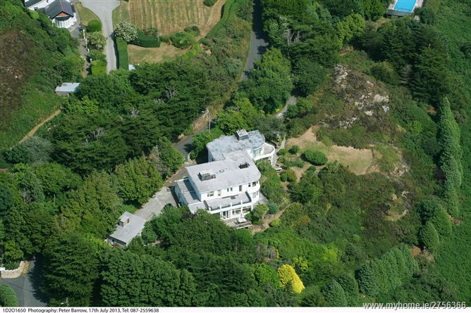

Story of WindGate
A unique 1930s Art Deco eagles nest on the Howth Peninsula was designed by the man who built the banks.
The house has been built in a German Art Deco design of the inter war years which is relatively rare in Ireland and has retained its market appeal.
Windgate owes its existence to the aforementioned Dublin based architect Toby Millar who built it for himself and his family. They lived in one floor for a time and he constructed the next as the resources became available. The house dates from 1935 when it would certainly have been Dublin's most architecturally swish abode of note - just before a certain Michael Scott got Geragh, his renowned international design house completed two years later right across the Bay at Sandycove.
In his professional epitaph, Millar is rather limply credited with having designed "a series of strong rooms and safe deposit vaults of a unique type."
This is because generations of Millars were responsible for designing and supervising the construction of Bank of Ireland banks and pretty much nothing else.
In 1879 architect Richard Chayton Millar was appointed to the position of architect to the expanding Bank of Ireland and so he set off around the country building branch offices in provincial towns.
He was succeeded in the job in 1907 by his son Adam Gerald Chayton Millar (apart from a time after Adam was declared bankrupt in 1910).
Adam was again succeeded in turn by his son Herbert Vivian Millar (Toby) who continued building Bank of Irelands until his early death in 1956.
While architects have long been known to exert every sinew of their talents into their own personal abodes (they're also their penultimate professional showcases), Windgate must have provided a truly refreshing break out for Toby Millar.
Because, despite being a talented architect of note, he got to design pretty much nothing but banks and strongrooms - and only Bank of Ireland banks and strongrooms at that.
Outside of Windgate and some work for Dublin Zoo, Toby's professional life was pretty much bankety bank. So it's not surprisingly then when it came to Windgate, he gave it socks.